| n | mean | sd | CV | |
|---|---|---|---|---|
| geyser waiting [min] | 299 | 72.314 | 13.890 | 0.192 |
| immer Y1 [yield] | 30 | 109.047 | 28.674 | 0.263 |
| nlschools IQ | 2287 | 11.834 | 2.069 | 0.175 |
| nlschools lang | 2287 | 40.935 | 9.004 | 0.220 |
Dormann (2020), Environmental Data Analysis — Chapter 1
2026-09-01
At the end of this chapter you should…
Note
Three real data sets from the MASS package run through the whole talk: geyser (Old Faithful eruptions), immer (barley yields) and nlschools (Dutch primary-school language scores).
Dormann’s opening question: what is the diameter of an ash tree?
We measure one tree at 37 cm. Must it be this thick? Of course not — a bit more light, a bit more fertiliser, and it would differ. But it could not be any thickness either: never 4 m.
A random variable is a function producing somewhat unpredictable values within limits. What we actually see are its realisations (= observations).
A sample is a group of such realisations.
| data set | n | what a row is | variable we use |
|---|---|---|---|
geyser |
299 | one eruption of Old Faithful | waiting time, duration |
immer |
30 | one barley variety at one site | yield in 1931 / 1932 |
nlschools |
2287 | one 8th-grade pupil | language score, verbal IQ |
Three samples, three very different shapes — let us look at each in turn.
geyser: waiting time between eruptions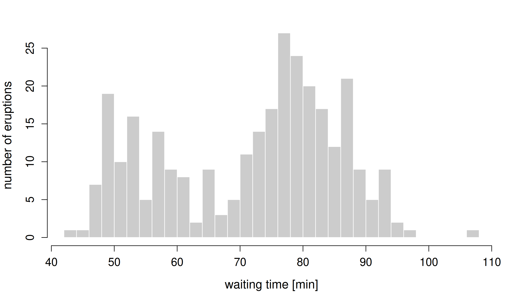
Two clear peaks: short waits around 55 min, long waits around 80 min.
immer: barley yield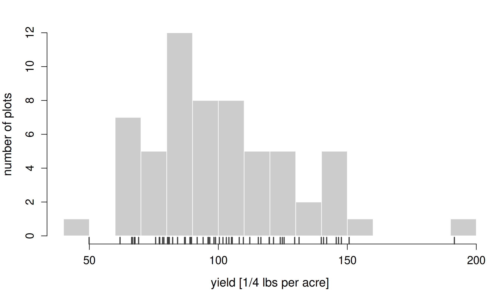
Only 60 values (30 plots × 2 years) — the ticks below show every single one. With so few data the shape is hard to judge.
nlschools: language test score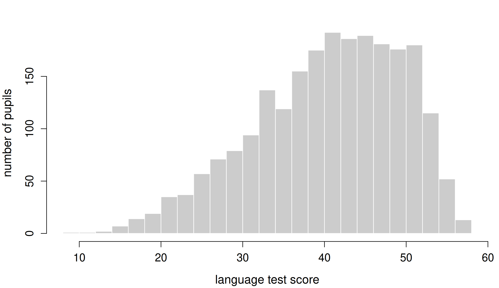
2287 pupils: a smooth, single-peaked shape with a tail towards low scores.
Values are grouped into equally wide bins; the bar height is the number of observations in that bin. The bin width is a choice — and it changes what you see.
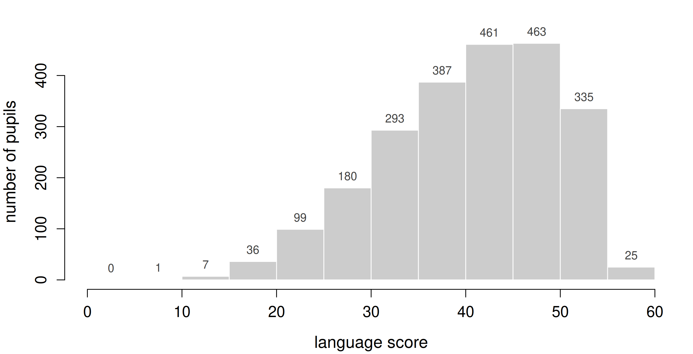
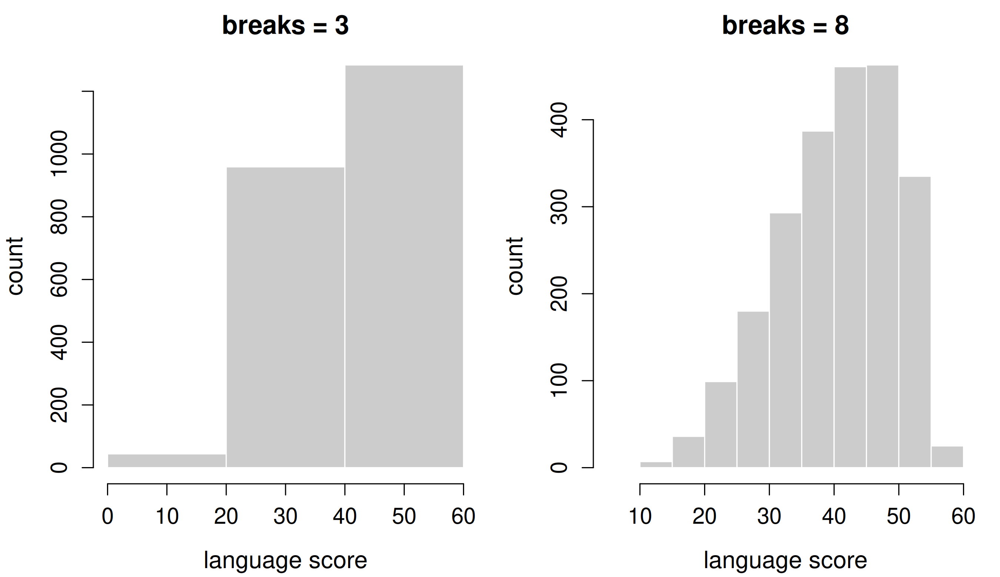
With three bins every pupil falls into one of three blocks: the peak, the tail and the asymmetry are all gone. Note that breaks is only a suggestion — R picks nice round limits, so breaks = 8 already yields ten bins, enough for the left tail to reappear.
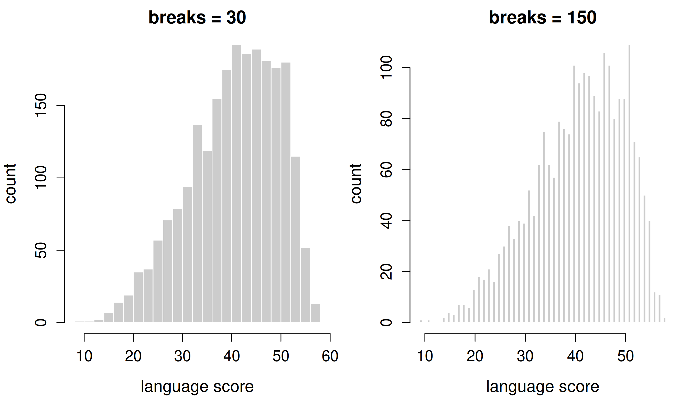
With 150 bins most bins hold 0 or 1 pupil and we are back to reading raw data. R’s default (Sturges’ rule) is usually a sensible starting point.
Dormann sends 10 groups of students out to measure 10 ash trees each. Here: six random samples of n = 10 pupils from the same nlschools population.
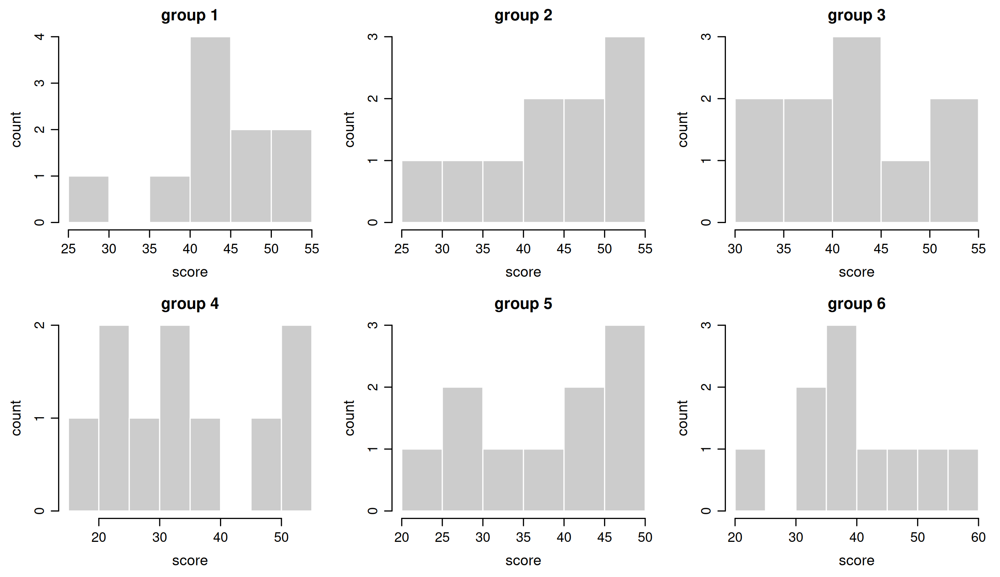
Different heights, different ranges, different shapes — all from one population.
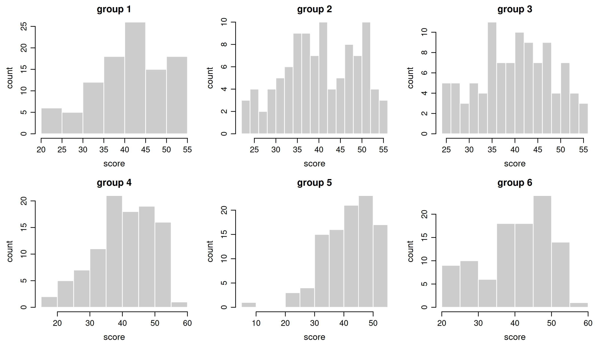
Only with many data points does a sample reveal the underlying distribution.
| Location (centrality) | Spread |
|---|---|
| mean | variance, standard deviation |
| median | standard error of the mean |
| mode | coefficient of variation |
| Huber’s robust mean | 95% confidence interval, 95% quantiles |
| interquartile range (IQR), MAD | |
| range, skewness, kurtosis |
We rarely care about the sample itself — we use it to estimate a feature of the population we could never measure completely.
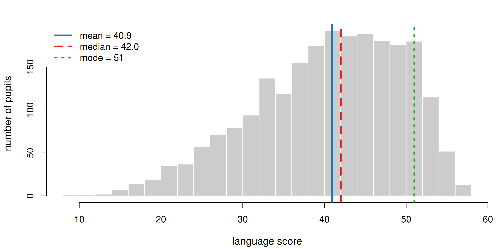
The median is the middlemost value — the 0.5-quantile. The mode is the most frequent value.
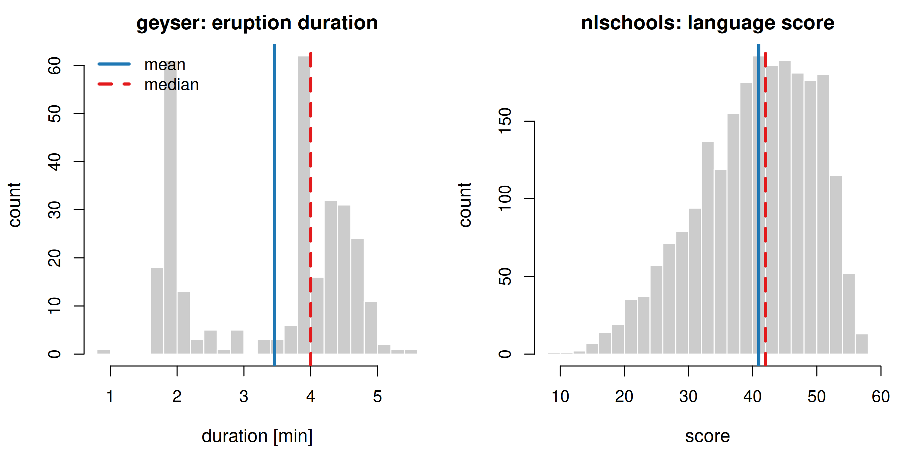
geyser$duration is strongly bimodal — no single number is a good summary. Always look at the picture before trusting the mean.
For roughly normal data about 68% of observations lie within ±1 s of the mean, and about 95% within ±2 s.
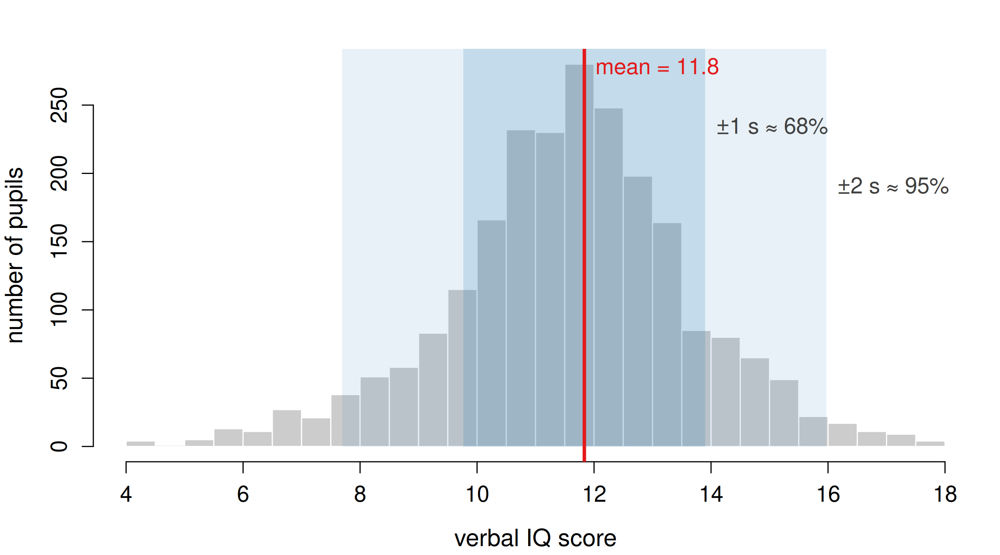
Here 71% and 94% of the pupils fall in the two bands. The variance is simply s squared — same information, but in squared units.
s divided by the mean — dimensionless, so it can be compared across data sets measured on completely different scales.
| n | mean | sd | CV | |
|---|---|---|---|---|
| geyser waiting [min] | 299 | 72.314 | 13.890 | 0.192 |
| immer Y1 [yield] | 30 | 109.047 | 28.674 | 0.263 |
| nlschools IQ | 2287 | 11.834 | 2.069 | 0.175 |
| nlschools lang | 2287 | 40.935 | 9.004 | 0.220 |
CV < 0.05 means high precision; CV > 0.2 means low precision. nlschools$lang varies much more relative to its mean than immer$Y1 does.
The standard deviation describes the spread of the data. The standard error of the mean describes the accuracy of the mean estimate — it shrinks as the sample grows.
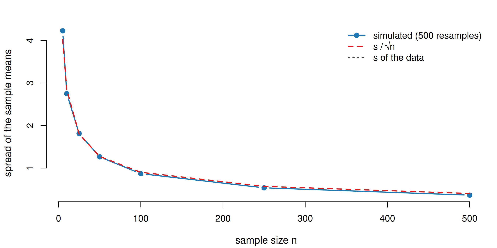
Twenty groups each draw 25 pupils and compute mean ± 2 · sem.
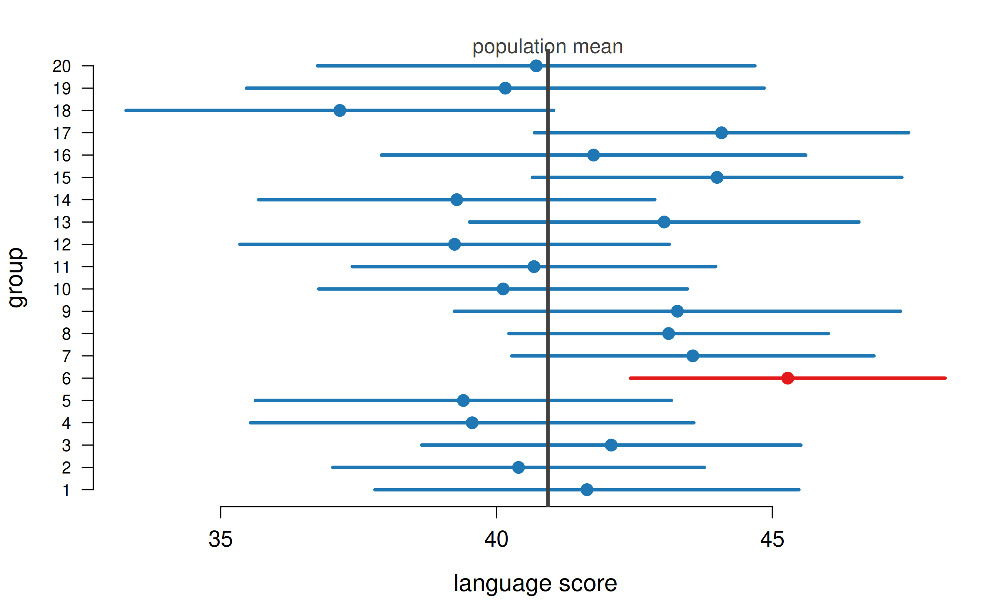
Intervals in red miss the true mean — about one in twenty does. Not “95% of the data lie here”, but “95% of such intervals catch the true mean”.
The IQR is the range of the middle 50% of the data. The MAD is a robust counterpart of s. Neither is disturbed by a single wild value.
| sd | IQR | MAD | |
|---|---|---|---|
| clean | 9.00 | 13 | 10.38 |
| + 1 typo | 104.06 | 13 | 10.38 |
One mistyped score of 5000 among 2287 pupils inflates the standard deviation more than tenfold (9.0 → 104), while the IQR and the MAD do not move at all.
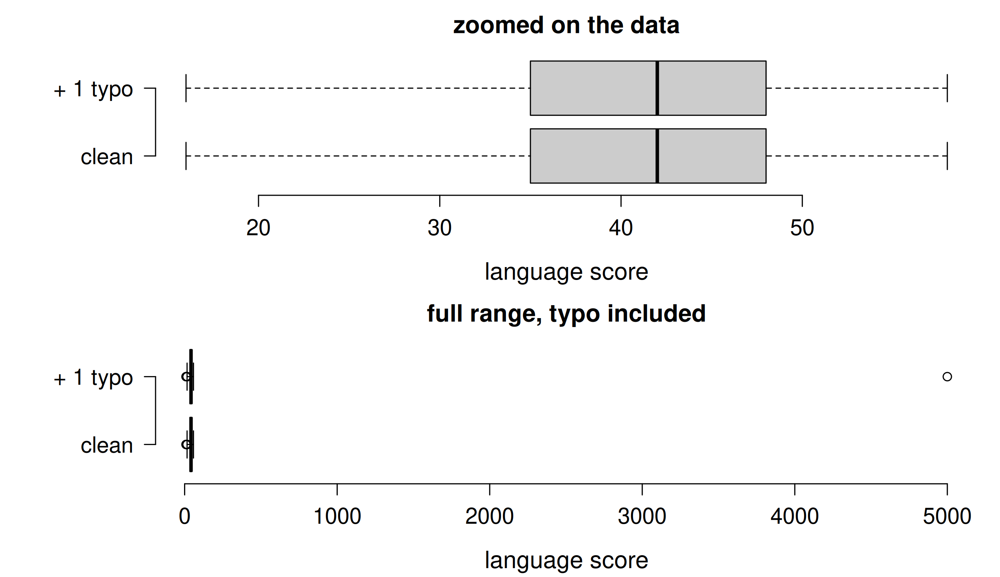
Top: on the scale of the real data the two samples are indistinguishable. Bottom: on the scale forced by the typo, all the real data collapse into a line.
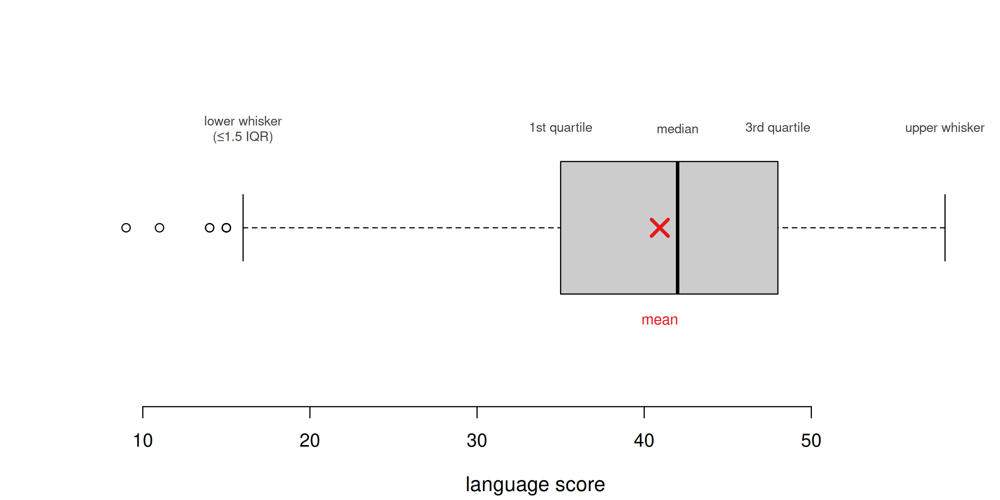
The box holds the central 50% (the IQR); the whiskers reach the most extreme value within 1.5 · IQR. Anything beyond is drawn as a point.
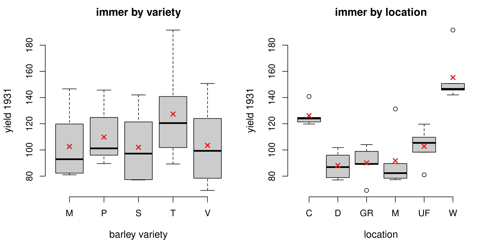
Two questions to ask: is the median centred in the box (→ symmetric), and are the whiskers equally long? Then mean ≈ median and normality is plausible.
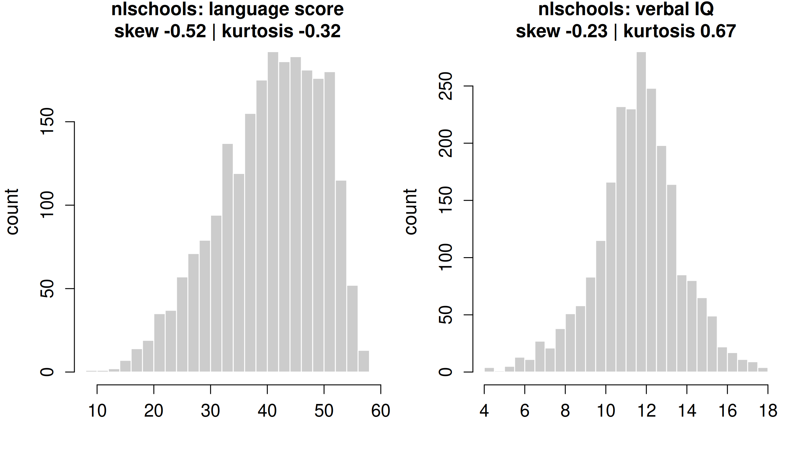
Negative skew (left) = long tail to the left; positive skew = tail to the right. Values near 0 mean “close to normal”, as for the verbal IQ on the right.
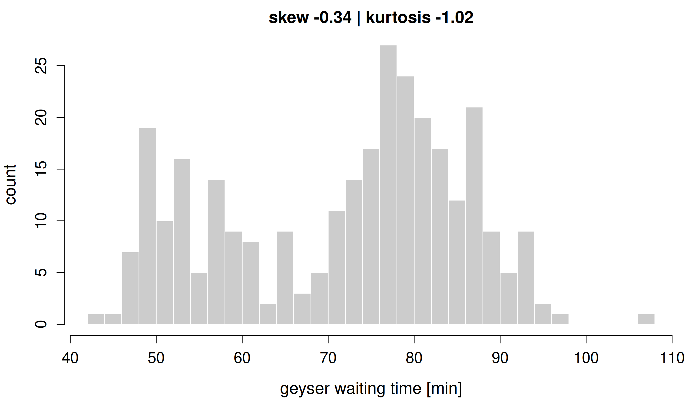
A strongly negative kurtosis: instead of one sharp peak this sample is flat and two-humped — a shape no single centrality measure can capture.
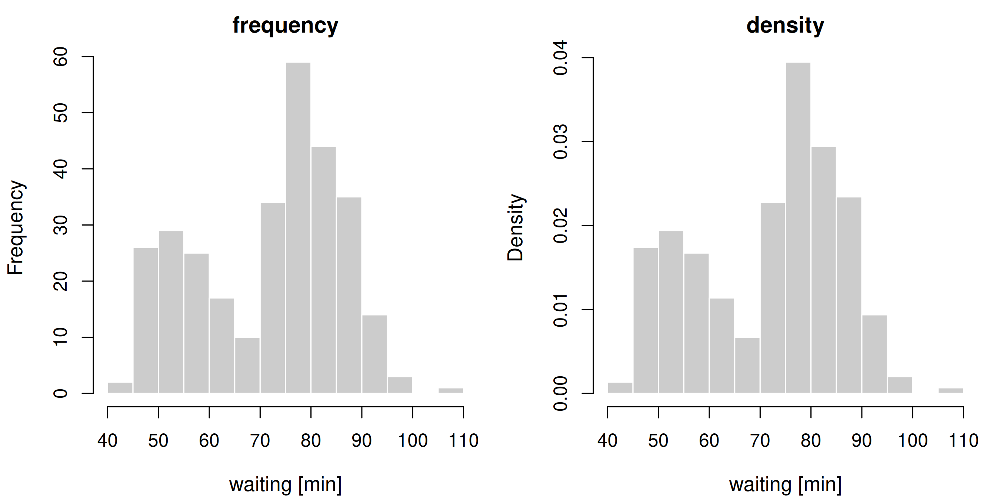
Same shape, different y-axis. Density = frequency ÷ (n × bin width), so the total area of all bars equals 1. That is what makes it comparable to a probability distribution.
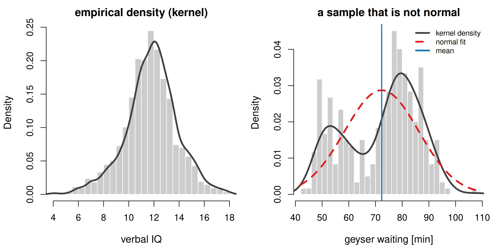
Left: a smooth, continuous picture of the sample, extending slightly beyond the observed range. Right: the geyser mean sits where almost no eruption happens — summary statistics never replace the plot.
Tip
Dormann, C. F. (2020). Environmental Data Analysis: An Introduction with Examples in R, Chapter 1. Springer.